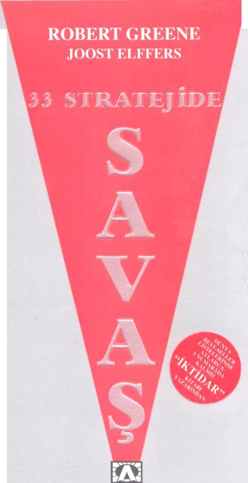
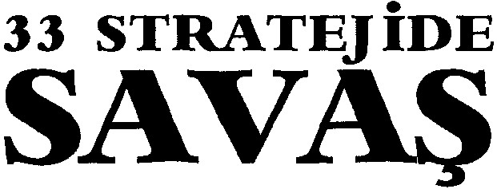

ALTIN
KİTAPLAR
YAYIN HALKLARI
KİTABIN ORİJİNAL ^1
THE 33 STRATEGIES OF WAR
ROBERT GREENE &
JOOST ELFFERS ©
AKCALI TELİF HAKLARI AJANS l ALTIN KİTAPLAR YAYINEVİ VE TİCARET A.Ş. ©
GÜLHAN TAŞLI
KAPAK DÜZENİ BASKI
1. BASIM/ ARALIK 2007 AKDENİZ YAYINCILIKA.Ş. Göztepe Mah. Kazım Karabekir Cad. No: 32 Mahmutbey - Bağcılar / İstanbul
BU KİTABIN HER TÜRLÜ YAYIN HAKLARI FİKİR VE SANAT ESERLERİ YASASI GEREGİNCE ALTIN KİTAPLAR YAYINEVİ VE TİCARET A.Ş.'YE AİTTİR.
ISBN 978 - 975 - 21 - 0914 - 8
ALTIN KİTAPLAR YAYINEVİ Celâl Ferdi Gökçay Sk. Nebioğlu İşhanı Cağaloğlu - İstanbul
Tel: 0.212.513 63 65 /526 80 12
0.212.520 62 46 ı 513 65 ı8
Faks: 0.212.526 80 11
http://www.aJtinkitaplar.com.tr
info@>altmkitaplarcom.tr

ROBERT GREENE
JOOST ELFFERS
TÜRKgESi
FÜSUN DORUKER
Yazarın Yayınevimizden Çıkan Kitapları
İKTİDAR
BAŞTAN ÇIKA^RMA SANATI
Napoleon’a, Sun-teu’ya, Tannça Athena’ya ve kedim BRUTUS’a.
İÇİNDEKİLER
ÖNSÖZ sayfa 17
KISIM 1
KENDİNİZE YÖN ELTİ İĞİNİZ SAVAŞ
1 sayfa 33
DÜŞMANLARINIZA SAVAŞ AÇIN: Kutupsallık Stratejisi
Yaşam sonsuz bir savaş ve çatışmadır, düşmanlannızı tanımlamadıkça etkili bir çarpışma sürdüremezsiniz. Düşmanlannızı yok etmeyi, düşmanlıklannı belirten düzen ve işaretleri algılamayı öğrenin. Her şeyi göz önüne aldıktan sonra, içsel olarak savaş ilan edin. Düşmanlannız size amaç ve yön duygusu verecektir.
2 sayfa 55
ESKİ SAVAŞLARI TE^^^^^^^YIN: Aklın Gerilla Savaşı Stratejisi
Genellikle sizi üzen ve hüsrana uğratan geçmişinizdir. Bilinçli olarak geçmişe karşı savaş açmalı ve içinde bulunduğunuz dakikaya tepki göstermeye kendinizi zorlamalısınız. Kendinize karşı acımasız olun; bıkkınlık verici eski yöntemleri yinelemeyin. Aklınıza karşı bir gerilla savaşı açarken hiçbir sabit savunma hattına izin vermeyin... her şey akıcı ve hareketli olmalı.
3 sayfa 76
OLAYLARIN ÇALKANTISINDA SOĞUKKANLILIĞINIZI YİTİLMEYİN: Karşı-Denge Stratejisi
Sıcak savaşta kişi akli dengesini yitirmeye yatkındır. Koşullar ne olursa olsun, soğukkanlı davranmanız, zihinsel güçlerinizi korumanız çok önemlidir. Düşmanlığa karşı açık bırakarak aklınızı sağlamlaştınn. Kendinizi savaş meydanının kaosundan uzaklaştırmayı öğrenin.
4 sayfa 103
ZORUNLULUK VE UMARSIZLIK DUYGUSU YARATIN:
Ölüm Tarlası Stratejisi
Kendinizin en büyük düşmanısınız. Bugünle ilgilenmek yerine yannın düşlerini kurarak zaman kaybediyorsunuz. Geçmişle bağlannızı koparın ve bilinmeyen topraklara ayak basın. Sırtınızı duvara dayayıp sağ salim kurtulabilmek için çılgınca savaşacağınızın bir "ölüm tarlasına" kendinizi yerleştirin.
KISIM 11 ORGANİZE SAVAŞ (TAKIM SAVAŞI)
5 sayfa 127
KÜMESEL DÜŞÜNME TUZAĞINDAN KAÇININ:
Komut ve Denetim Stratejisi
Herhangi birgruba liderlik yapmanın sonınu insanlann kaçınılmaz bir biçimde kendi gündemlerinin oluşudur. Oluşturduğunuz emir-komuta zinciri, gruptakilerin kendilerini sıkıştınlmış hissetmeden sizin liderliğinizi izlemelerini sağlamalıdır. Bir katılımcılık duygusu yaratın, ama grup düşüncesine ya da kolektif karar vermenin man-tıkdışılığına düşmeyin.
6 sayfa 148
GÜÇLERİNİZİ AYIRIN: Denetimli Kaos Stratejisi
Savaşın en kritik unsurlan hız ve uyum sağlamaktır; düşmanınızdan daha hızlı dav-ranabilmeli ve karar verebilmelisiniz. Güçlerinizi kendi başlanna hareket edebilecek bağımsız gruplara ayırın. Onlara seferin nıhunu aşılayarak ele avuca sığmaz, durdurulamaz bir biçime getirin ve tamamlamalan gereken bir görev verin ve bırakın gitsinler.
7 sayfa 165
SAVAŞINIZI BİR HAÇLI SEFERİNE ÇEVİRİN: Moral Stratejileri
İnsanlan motive edip morallerini yüksek tutmanın sırn, kendilerinden çok grubu düşünmeye yönlendirmektir. Onlan bir davaya, nefret edilen düşmana karşı bir haçlı seferine katın. Sağ kalma olasılıklarını bir bütün olarak ordunun başarısına bağlı olduğunu görmelerini sağlayın.
KISIM III SAVUNMA SAVAŞI
8 sayfa 195
Ç^ARPIŞ^^^^M ÖZENLE SEÇİN: Kusursuz Ekonomi Stratejisi
Hepimizin sınırlan vardır; enerji ve becerilerimiz bizi belirli bir noktaya kadar götürebilir. Sınırlannızı iyi bilmeli ve çaıpı.şmalan dikkatle seçmelisiniz. Bir savaşın gizli giderlerini düşünün: yitirilen zaman, boşa harcanan siyasi iyi niyetler, intikam almaya kararlı, acı içindeki bir düşman. Bazen düşmanlannıza doğnıdan saldırmak yerine kapana kıstırmak için beklemek daha iyi sonuç verir.
9 sayfa 215
OLAYLARI TERSİNE ÇEVİRİN: Karşı Saldırı Stratejisi
İlk adımı atıp saldın başlatmak çoğunlukla sizi dezavantajlı bir konuma sokacaktır. Stratejinizi ortaya çıkardığınız için seçeneklerinizi sınırlamış sayılırsınız. Tam tersine kendinizi tutup diğer tarafın ilk adımı atmasını beklemeyi öğrenin, böylece herhangi bir açıdan karşı saldın gerçekleştinnek esnekliğine sahip olabilirsiniz. Eğer düşmanınız çok saldırgan ise, kendisini zayıf bir konumda bulmasına yol açacak düşüncesizce bir saldmya girişmesi için yemleyebilirsiniz.
10 sayfa 240
TEHDİT UNSURU OLUŞTURUN: Caydırma Stratejileri
Saldırganlarla savaşmanın en iyi yolu, başlangıçta size saldınnalannı engellemektir. Kendinize ün kazandınn: siz biraz çılgın sayılırsınız. Sizinle savaşmaya değmez. Bazen belirsizlik açıkça tehdit etmekten daha iyidir: eğer rakipleriniz sizinle çatışmanın neye mal olacağından emin olmazlarsa, bunu öğrenmek istemeyeceklerdir.
11 sayfa 263
Z^^AN I MEKAN T^^ASI: Sıcak Savaşsız Strateji
Güçlü bir düşman karşısında gerilemek zayıflığın değil kuvvetli oluşun bir işaretidir. Bir saldırgana tepki gösterme dürtüsüne karşı koyarak kendinizi toplayacağınız, düşüneceğiniz ve perspektif kazanacağınız çok değerli zamana sahip olabilirsiniz. Bazen hiçbir şey yapmadan çok şey kazanabilirsiniz.
KISIM IV SALDIRI SAVAŞI
12 sayfa 277
ÇARPIŞ^^^ KAYBEDİN SAVAŞI KAZANIN: Müthiş Strateji
Müthiş strateji bir çarpışmanın ilerisine bakıp daha ötesini hesaplayabilme sanatıdır. Ulaşmak istediğiniz ana hedef üzerinde odaklanmanızı ve bunu başarmak için plan yapmanızı gerektirir. Bırakın başkatan çarpışmalann sarmalına takılsın ve kendi küçük zaferlerinin tadını çıkarsın. Müthiş strateji size en büyük ödülü getirecektir: son atılan kahkaha.
13 sayfa 308
DÜŞMANINIZI TANMN: İstihbarat Stratejisi
Stratejilerinizin hedefi karşınızdaki ordudan çok onu yöneten kadın ya da erkeğin aklına yönelik olmalıdır. Bu kişinin aklının nasıl çalıştığını algılarsanız, nasıl aldatacağınız ve denetleyebileceğinizin anahtannı elde edebilirsiniz. Insantan okumayı, içsel düşünce ve niyetleri hakkında bilinçsizce yolladıktan sinyalleri yakalamayı öğrenin.
14 sayfa 333
DİRENİŞİ HIZLI VE ANİ HAREKETLE YOK EDİN:
Yıldırım Harekâtı Stratejisi
Çoğu insanın kararsız ve gereğinden fazla temkinli olduğu bir dünyada hızın kullanılması size inanılmaz bir güç kazandıracaktır. Rakiplerinizin düşünmeye ya da hazırlanmaya zamanı olmadan saldırmak, anlan duygusaltaştıracak, dengelerini bozacak ve hata yapmaya zorlayacaktır.
15 sayfa 344
DİNAMİKLERİ DENETLEYİN: Zorlayıcı Stratejiler
insanlar sürekli olarak sizi denetlemek için uğraşırlar. Başanlı olmanın tek yolu denetimi ele geçirme yönteminizin daha zeki ve sinsi olmasıdır. Karşı tarafın her adımına baskın çıkmaya çabalamak yerine, ilişkinin yapısını tanımlamaya çalışın. Karşı-nızdakilerin aklını denetlemeye, onlann duygusal düğmelerine basmaya ve hata yap-malannı sağlamaya gayret edin.
ıo
16 sayfa 369
EN FAZLA ACI VEREN NOKTAYA VURUN: Ağırlık Merkezi Stratejisi
Herkesin yaslandığı bir g'ıç kaynağı vardır. Rakiplerinize bakarken, bu kaynağın yüzeyinin altını görmeye, tüm yapıyı bir arada tutan ağırlık merkezini bulmaya çalışın. Bu noktaya darbe indirmek inanılmaz acı verecektir. Karşı tarafın en fazla değer verdiği ve komduğu noktayı bulun ve vunm.
17 sayfa 385
ONLARI PARÇALAYARAK YENİN: Böl ve Fethet Stratejisi
Düşmanınızın görünümünden asla ürkmeyin. Bütünü oluşturan parçalanna bakın. Parçalan ayırarak huzursuzluk ve bölünmüşlük tohumlan atarak en yenilmez gibi görünen düşmanı yere yıkabilirsiniz. Somnlarya da düşmanlarla karşı karşıya kalınca, büyük sorunlan küçük, kolayca yenilgiye uğratılabilir parçalara ayınn.
18 sayfa 409
RAKİBİNİZİN YUMUŞAK KARNINI ORTAYA ÇIKARIN VE VURUN: Döndürme Stratejisi
insanlara doğmdan saldırdığınız zaman dirençlerini arttırır ve işinizi zorlaştmrsınız. Daha iyi bir yol vardır: rakibinizin dikkatini ön tarafa çekin ve hiç beklemediği bir açıdan saldınya geçin, insanları kendilerini tehlikeye atıp zayıflıklannı sergilemeleri için yemleyin ve yan taraftan açacağınız ateşle tarayın.
19 sayfa 433
DÜŞMANI ÇEMBERE ALIN: İmha Etme Stratejisi
insanlar savunmanızdaki tüm. boşlukları kullanarak size saldıracaklardır. Hiçbir boşluk göstermemelisiniz, işin sım düşmanınızı kuşatmak, her taraftan bitmeyen bir baskı uygulamak ve dış dünyayla bağlantısını kesmektir. Zayıflamaya başladığını hissedince, ilmeği biraz daha sıkarak iradesini ezin.
20 sayfa 451
ZAYIF DÜŞMEYE YÖNLENDİRİN:
Biçilecek Kadar Olgunlaştırma Stratejisi
Ne kadar güçlü olursanız olun, insanlarla bitmeyen savaşlar sürdürmek yorucudur, pahalıdır ve hayal gücünden yoksundur. Bilge stratejistler manevra yapma sanatını
tercih ederler: daha savaş başlamadan önce, rakiplerini öylesine zayıf noktalara düşürecek yollar bulurlar ki, zafer kazanmak kolay ve çabuk olur, ikilemler yaratın: on-lan hepsi de kötü olan tepkiler göstermeye yönlendirecek seçenekler sunan manevralar tasarlayın,
21 sayfa 481
İLERLERKEN PAZARLIK YAPIN: Diplomatik Savaş Stratejisi
Pazarlığın öncesinde ve pazarlık sırasında ilerlemeyi sürdürmeli, büyük bir baskı yaratmalı ve karşı tarafı sizin isteklerinizi kabul etmeye zorlamalısınız, Ne kadar fazla kazanırsanız, anlamsız ödünler olarak o kadar fazla geri verebilirsiniz. Sert ve uzlaşmacı olmayan bir ün yaratın ki, insanlar daha sizinle tanışmadan önce biraz geri dursunlar,
22 sayfa 500
İŞLERİ NASIL SONLANDIRACAĞINIZI BİLİN: Çıkış Stratejisi
Hakkınızdaki kararlar işleri nasıl sonlandırdığınıza bakarak verilir. Kötü ya da tamamlanmamış bir sonuç yıllar boyunca yankılanabilir. Sonlandırma sanatı nerede duracağınızı bilmektir. Stratejik bilgeliğin zirvesi hiçbir gerçekçi çıkar yolu bulunmayan tüm çatışmalardan ve karışıklıklardan kaçınmaktan geçer.
KFSI.V1 V GAYRİ NİZAMİ (KİRLİ) SAVAŞ
23 sayfa 525
GERÇEKLERİ VE KURGULARI AYRILMAYACAK BİÇİMDE DOKUYUN: Yanlış Algı Stratejisi
Hiçbir yaratık çevresinde olup bitenleri görme ya da hissetme becerisi olmadan yaşamını sürdüremeyeceğinden, düşmanlannızın neler olup bittiği ve özellikle sizin neler yaptığınızı anlamalannı güçleştirin. Beklentileıini besleyin, aızulanna uygun bir gerçek üretin ve kendilerini kandamalannı sağlayın. Gerçeği algılamalarını denetlediğiniz zaman insanlan kolayca denetleyebilirsiniz.
24 sayfa 550
HİÇ BEKLENMEDİK YOLU SEÇİN: Sıradan-Sıradışı Strateji
insanlar davranışlarınızın bilinen modellere ve yöntemlere uyum göstereceğini tahmin eder. Bir strateji uzmanı olarak göreviniz karşınızdakilerin beklentilerini altüst etmektir. Sizi nasıl gördüklerini sağlamlaştırmak için önce sıradan ve göreneksel bir şey yapın ve ardından sıradışı bir eylemle tepelerine binin. Ani olarak ortaya çıkan korku daha da büyük olacaktır. Bazen hiç beklenmediği için sıradan olgular sıradışı biçimini alır.
25 sayfa 578
AHIAKSAL YÜKSELTİLERİ İŞGAL EDİN: Doğruluk Stratejisi
Siyaset dünyasında uğnına savaş verdiğiniz dava düşmanınızın davasından daha adil gibi görünmelidir. Rakiplerinizin niyetlerini sorgulayarak kötü göriinmelerini sağlarsanız, destek alacaktan ve manevra yapabilecekleri alanı daraltmış olursunuz. Kurnaz bir düşmanın ahlaksal saldınsıyla karşılaştığınız zaman sızlanmayın ya da öfkelenmeyin; ateşe ateşle karşılık verin.
26 sayfa 596
HEDEFLERİNİ YOK EDİN: Boşluk Stratejisi
Boşluk duygusu, sessizlik, yalnızlaştınlmak, başkalanyla ilişki kuramamak çoğu insan için dayanılmazdır. Düşmanlannıza saldıracak hedefler sağlamayın, tehlikeli ama ele geçmez olun ve sizi boşluğa doğnı kovalamalannı seyredin. Yüz yüze çarpışmak yerine tedirgin edici, zarar verici yan saldınlar yapın ve can sıkıcı ısınklar alın.
27 sayfa 614
KENDİ ÇIKARLARINIZI İLERİ GÖTÜRÜRKEN BAŞKALARININ ÇI^^^^ İÇİN ÇALIŞIYORMUŞ GİBİ GÖRÜNÜN: İttifak Stratejisi
Fazla çaba harcamadan ve kan dökmeden ilerleyebilmek için sürekli değişen ittifaklar ağı olu.ştunın, başkalannın eksiklerinizi tamamlamasını, ayak işlerinizi yapmasını, sizin adınıza savaşmasını sağlayın. Aynı zamanda diğerlerinin arasındaki ittifakları bozun, düşmanlannızıyalnızlaştırarak zayıflatın.
28 sayfa 639
RAKİPLERİNİZE KENDİLERİNİ AS^^^ İÇİN YETERLİ İP VERİN: Üstünlük Sağlama Stratejisi
Yaşamın en büyük tehlikeleri çoğunlukla dış düşmanlanmızdan değil, ortak dava için çalışıyormuş gibi görünen, ama aynı anda bizi sabote etmeye çalışan meslektaş-lanmızdan ve dostlanmızdan gelir. Bu tür rakiplerinizde kuşku ve güvensizlik uyan-dınn, çok fazla düşünmeye ve kendini savunur gibi davranmaya yönlendirin. Kendilerini yıkmaya yönelik eğilimleriyle asmalarına yol açıp sizi lekesiz ve temiz bırakma-lannı sağlayın.
29 sayfa 664
UFAR. LO^^^^AR. ALIN: Oldubitti Stratejisi
Açıkça gücünü sergilemek ve ani sıçramalarla yükselmek kıskançlık, güvensizlik ve kuşku oluşturduğundan tehlikelidir. Genelinde en iyi çözüm ufak lokmalar almak, küçük alanlan yutmak, insanlann görece kısa dikkat süreleri üzerinde oynamaktır. Daha onlar farkına varmadan siz bir imparatorluk oluşturursunuz.
30 sayfa 676
AKILLARINA GİRİN: İletişim Stratejileri
iletişim kurma savaşının gerçekleştirildiği savaş meydanı, etkilemek istediğiniz kişilerin direniş gösteren, kendini savunan akıllandır. Hedefiniz savunma hatlannı delip akıllannı işgal etmek olmalıdır. Kendi fikirlerinizi düşman hatlannın gerisine sızdırmayı, küçük ayrıntılar aracılığıyla mesajlar göndermeyi, insanlan sizin anuladığınız sonuçlara gelmeleri için yemlemeyi ve bu noktaya kendi iradeleriyle geldiklerini düşünmelerini sağlamayı öğrenmelisiniz.
31 sayfa 699
İÇERİDEN İç Cephe Stratejisi
Rakiplerinizin arasına kanşıp onlan yıkmak için çalışırsanız, tepki gösterecekleri bir hedef oluşturmadığınızdan, en büyük avantajı elde etmiş olursunuz, istediğinizi almak için bunu elinde bulunduranlarla dövüşmeyin, onlara katılın ve yavaş yavaş sahiplenin ya da bir darbe yapmak için en uygun zamanı bekleyin.
32 sayfa 718
BOYUN EĞER GİBİ GÖRÜNÜP BASKI ALTINA ALIN:
Pasif Saldırganlık Stratejisi
Siyasi kaygılann çok yükseldiği bir dünyada en etkili saldın biçimi gizli olandır, uysal ve hatta sevecen bir yüzeyin ardına gizlenmiş olanıdır. Pasif saldırganlık stratejisini uygulamak için hiçbir direniş sergilemeden insanlarla aynı yolda olduğunuzu göstermeyi öğrenin. Ama gerçekte durumu denetiminiz altına alın. Saldırganlığınızı çok iyi gizlediğinizden emin olursanız, varlığını bile inkâr edebilirsiniz.
33 sayfa 743
TERÖR HAREKETLERİYLE BELİRSİZLİK VE PANİK Y^ARATIN: Zincirleme Tepki Stratejisi
Insanlann direnme iradesini yıkmanın ve stratejik bir tepki gösterme becerilerini yok etmenin en iyi yolu terörden geçer. Bir terör kampanyasının amacı savaş meydanında zafer kazanmak değil, azami düzeyde kaosa yol açıp karşı tarafı umarsız duygusal tepkiler göstermeye kışkırtmaktır. En etkili karşı-stratejiyi planlamak için terör kur-banlannın dengelerini konımalan gerekir. Kişinin mantıklılığı en sonuncu savunma hattıdır.
ÖN SÖZ
İçinde yaşadığımız kültür herkese adil davranmanın demokratik değerlerini yüceltir, topluma uyum sağlamanın önemini öne çıkarır ve başkalarıyla işbirliği yapmayı destekler. Açıkça saldırgan ve dövüşken kişilerin toplumsal açıdan bir bedel ödeyip sevilmediklerini ve yalnızlaştırdıklarını çok erken yaşlarda öğreniriz. Uyum ve İşbirliğinin değeri, yaşamda başarılı olmanın yollarını gösteren kitaplarla, başarıya ulaşmış kişilerin zevkli, huzurlu dışsal yüzeylerinin halka açıklanmasıyla öğretilir ve toplumsal alanı kaplayan doğru olma kavramları gibi açık ve gizli yollarla sürdürülür. Bizim sorunumuz barış için eğitilmemiz ve gerçek dünyada karşı karşıya kaldığımız savaş için hazırlıksız olmamızdır.
Dünya üzerinde insanoğlunun yaşamı bir savaştır.
ESKİ AHİT’DE EYÜP’ÜN KİTABI 7:1
Qui desiderat pacem, praeparet bellum (barış isteyenler bırakın savaşmak için hazırlansın) VEGETIUS, MS IV. YY.
Savaş çeşitli düzeylerde yaşanır. En açıkça görüleni karşı taraftaki rakiplerimizdir. Dünya gitgide daha rekabetçi ve kötü olmaktadır. Siyasette, iş yaşamında ve hatta sanatta kendilerine bir yer edinmek için neredeyse her şeyi yapabilecek rakiplerle karşılaşırız. Ne var ki, sözde bizim tarafımızda gibi görünenlerle yaptığımız çarpışmalar daha sıkıntı verici ve daha karmaşıktır. Dışarıdan bakınca ekip oyununu oynuyor gibi görünenler, dostça, uysalca davrananlar, ama aynı zamanda bizi perde arkasından vuranlar ve kendi gündemlerini ileriye götürmek için grubu kullananlar vardır. Pasif-saldırganlığın gizli oyunlarını oynayanları, asla gelmeyen yardım vaatlerinde bulunanları, gizli bir silah olarak suçluluk duygusu yaratanları tanımak çok daha zordur. Yüzeyde her şey yeterince huzurlu gibi görünür, ama yüzeyin biraz altına inince her kadın ya da erkek kendi çıkarları için uğraştığından, bu dinamikler ailelerini, ilişkilerini etkiler. Belki içinde bulunduğumuz kültür bu gerçeği yadsır ve daha nazik bir tablo oluşturmaya çabalar, ama savaş yaralarımızla işin aslını hissederiz.
Bizler ve meslektaşlarımız barış ve özveri ideallerine ulaşamayacak kadar niteliksiz kişiler değiliz, ama yaradılışımızı değiştiremeyiz. Göz ardı edilmesi ya da baskı altına alınması olanaksız saldırgan dürtülerimiz vardır. Geçmişte bireyler, geniş bir aile, şirket ya da devlet gibi bir oluşumun kendilerine bakmasını beklerlerdi, ama artık durum değişti ve bu ilgisiz dünyada öncelikle kendimizi ve çıkarlarımızı düşünmek zorundayız. Gereksinim duyduklarımız aslında ulaşılmayacak kadar yüksek ve insanlıktan uzak barış ve işbirliği standartları değildir ama bunun yarattığı karmaşa, çelişkilerle ve gündelik yaşamın çatışmalarıyla nasıl başa çıkacağımızı gösteren uygulanabilir bilgilerdir. Üstelik bu bilgi istediğimizi elde etmek ya da kendimizi savunmak için nasıl daha güçlü olacağımızı değil, çatışmalar söz konusu olunca nasıl daha mantıklı ve stratejik davranacağımızı, saldırgan dürtülerimizi bastırmak ya da yadsımak yerine nasıl doğru kanala yönlendireceğimizi içerir. Eğer hedeflenecek bir ideal varsa, kurnaz ve zeki manevralarla zorlu koşulları ve insanları yönetmeyi başaran stratejik savaşçı bir kadının ya da erkeğin hedefi olmalıdır.
Strateji bir bilim olmanın ötesidir; bilginin günlük yaşama uygulanmasıdır;
sürekli değişen koşulların ışığında kılavuz olarak alınan ilk fikirleri değiştirebilme becerisine sahip düşüncenin gelişmesidir; en zorlu koşulların baskısı altında bile harekete geçebilme sanatıdır.
HELMUTH VON MOLTKE, 1800-1891
Birçok psikolog ve sosyolog genellikle sorunların çatışmalarla çözümlendiğini ve gerçek farklılıkların uzlaştığını iddia etmektedir. Yaşamdaki başarılarımız ve başarısızlıklarımız toplumda karşımıza çıkan kaçınılmaz çatışmalarla ne kadar iyi ya da ne kadar kötü başa çıktığımızla bağlantılıdır. Genellikle insanların çatışmalarla başa çıkmak için kullandıkları, tüm çatışmalardan uzak kalmak, duygusallaşıp çırpınmak, kurnaz ve manipülatif davranmak gibi yöntemler uzun vadede verimsiz olur, çünkü çoğu zaman durumu daha da kötüye götürür. Stratejik savaşçılar çok farklı davranırlar. Uzun vadeli hedefleri düşünüp hangi çatışmalardan uzak kalmaları, hangilerinden kaçınmamaları gerektiğine karar verirler ve duygularını denetleyip yönlendirmesini çok iyi bilirler. Savaşmak zorunda kalınca dolaylı ve gizli manevralar yaparak manipülasyonlarının kolayca izlenmesini önlerler. Böylece günümüzün siyasal ortamında beğeni toplayan barışçıl dış görünümlerini koruyabilirler.
Mantıklı bir savaş sürdürme ideali bizlere, strateji sanatının ortaya çıktığı ve geliştirildiği organize savaşlardan gelmiştir. Başlangıçta savaşlar hiç de stratejik değildi. Kabileler arasında bireylerin kendi kahramanlıklarını sergileyecekleri adeta bir şiddet töreni gibi son derece vahşi dövüşler biçiminde yaşanıyordu. Kabileler genişleyip devletlere dönüşünce, savaşların birçok gizli gideri olduğu, savaşın genellikle yorgunluğa ve hatta zafer kazanan taraf için bile özyıkıma yol açtığı ortaya çıktı. Her nasıl olacaksa, savaşların daha mantıklı gerçekleştirilmesi gerekiyordu.
"Strateji" sözcüğü eski Yunancada "ordunun lideri" anlamına gelen strategos sözcüğünden gelmektedir. Bu anlamda strateji tüm savaşı yönetme ve hangi düzende cepheye gidileceğine, hangi topraklarda yapılacağına, başarılı olmak için hangi manevraların yapılması gerektiğine karar verme sanatıydı. Bu bilgi geliştikçe, askeri liderler daha fazla düşünüp ilerisi için daha fazla plan yaptıkları takdirde başarı olasılıklarının arttığım fark ettiler. Persleri yenilgiye uğratan Büyük İskender’in kazandığı zaferlerde olduğu gibi yepyeni stratejiler kendilerinden çok daha büyük orduları yenmelerini sağlayabilirdi. Strateji uygulayan kurnaz rakiplerle karşılaşınca, farklı baskılar ortaya çıktı: avantaj kazanmak için bir generalin karşı tarafa oranla daha stratejik, daha dolaylı, daha kurnazca davranması gerekiyordu. Yeni stratejiler ortaya çıktıkça ordu yönetme sanatı zaman içinde gitgide karmaşıklaştı.
Gerçi "strateji" sözcüğü köken olarak Yunancadır, ama bu kavramın içeriği tüm zamanlarda tüm kültürlerde vardır. Savaşın kaçınılmaz kazalarıyla nasıl başa çıkılacağı, en iyi planın nasıl tasarlanacağı, ordunun en iyi biçimde nasıl düzenleneceğine dair somut ilkeler eski Çin’den çağdaş Avrupa’ya kadar tüm savaş kılavuzlarında bulunur. Karşı saldırılar, kuşatma manevraları, aldatma sanatı Cengiz Han’ın, Napoleon’un ve Zulu Kralı Shaka’nın ordularında benzerliklerini gösterir. Bir bütün olarak bu ilkeler ve stratejiler bir çeşit evrensel askeri bilgeliğe, başarı şansını yükselten uygulanabilir modellere işaret eder.
"Öyleyse çocuğum kendi stratejini geliştir ki müsabakalardaki ödüller elinden kaçmasın. Kişiyi iyi ağaç kesici yapan şey, kuvvetten çok stratejidir. Şarap-mavisi denizde rüzgârlaryandan estiğinde, bir kaptanın gemisini rotasında tutan stratejidir. Ve atlı araba yarışlarında strateji kazandırır. Bazı sürücüler atlarına ve arabasına güvenip dizginlere hiç asılmadan pervasızca o yana bu yana gider gelir. Ama kazanmasını bilen biri, atları bu kadar iyi olmasa bile, gözünü yoldan ayırmaz, kısa dönüşleryapar, daha başlangıçtan itibaren dizginlerini gergin tutar ve sürekli önde gideni izler!'
İLYADA, HOMEROS, MÖ IX. YY.
Belki de içlerinde en ünlü strateji uzmanı, eski Çin klasikleri arasında yer alan Savaş Sanatı adlı kitabın yazarı Sun-tzu idi. Milattan önce dördüncü yüzyılda yazıldığı tahmin edilen kitapta, yüzyıllar boyunca geliştirilecek olan stratejik modellerin ve ilkelerin izlerini bulmak olasıdır. Aralarındaki bağlantı ya da Sun-tzu’nun gözünde savaş sanatının temelini oluşturan şey, kan dökmeden savaşı kazanma fikridir. Rakibinin psikolojik zayıflıkları üzerinde oynayarak onu tehlikeli konumlara sokacak manevralar yaparak akıl karışıklığı ve hüsran duyguları uyandırarak, bir strateji uzmanı karşı tarafın fiziksel olarak teslim olmadan önce zihinsel olarak yıkılmasını sağlar. Bu yöntemle zafer daha ucuza kazanılır. En az yaşam kaybıyla ve en az kaynak harcamasıyla savaşı kazanan ülkeler uzun süreler varlığını devam ettirir. Elbette savaşların çoğu böylesine mantıklı bir biçimde yaşanmaz, ama bu ilkeyi uygulamış olan tarihteki bazı çarpışmalar (Ispanya’da Scipio Africanus, Ulm’de Napoleon ve Birinci Dünya Savaşı’nın çöl harekâtlarında T. E. Lawrence) diğerlerinden öne çıkarak örnek oluşturur.
Savaş, toplumun geri kalanından tümüyle ayrılmış bir dünya değildir. Karakter yapımızın en iyi ve en kötü yönleriyle dolu bir insanlık arenasıdır. Ayrıca toplumdaki akımları da yansıtır. Gerilla savaşı, terörizm gibi örneklere uymayan, daha kirli stratejilerin ortaya çıkması neredeyse her şeyin kabul gördüğü toplumdaki benzer evrimi yansıtmaktadır. Göreneklere uygun olsun olmasın, savaşlarda başarıya ulaşan stratejiler belirli bir zaman dilimiyle sınırlanmayan psikolojiye dayalıdır ve büyük askeri yenilgiler bize insanoğlunun aptallığı ve herhangi bir arenadaki gücün sınırı hakkında çok şey öğretir. Olağanüstü derecede mantıklı davranmak, duygusal açıdan dengeli olmak, en az miktarda kan döküp kaynak harcayarak kazanmaya yönelik strateji ideallerinin ise günlük yaşamımızın çatışmalarında sonsuz uygulama alanları ve bağlantıları vardır.
Günümüzün değerleriyle karşılaştırılınca çoğu kişi organize savaşların doğasında barbarlığın yattığını, insanoğlunun şiddete yatkın geçmişinin kalıntıları olduğunu ve tümüyle ortadan kalkması gerektiğini ileri sürmektedir. Savaş sanatını toplumsal düzeyde desteklemenin, ilerlemenin önünde bir engel oluşturacağını ve çatışmalarla kavgaları yüreklendireceğini söyleyeceklerdir. Zaten dünya yüzünde bunlardan yeterince yok mu? Bu sav son derece çekicidir, ama çok da mantıklı değildir. Bizden daha saldırgan olan, arzuladıklarını her ne yolla olursa olsun elde etmek isteyenler bulundukça bunların hepsi var olacaktır. Her zaman tetikte olmalıyız ve bu tiplere karşı kendimizi nasıl savunacağımızı bilmeliyiz. Kurnaz ve güçlü olanlara teslim olmak zorunda kaldıkça, uygarlık ilerleyemez. Daha doğrusu bu kurtların karşısında barışsever olarak duranlar, bitmek bilmeyen trajedilerin kaynağı olacaktır.
Benliğini kullanarak kendinin efendisi olan bir kişi için benliği en yakın dostudur, ama benliğinin efendisi olamayanlar için benlikleri savaştıkları düşman gibidir.
THEBHAGAVAD GITA, HİNDİSTAN, MS 1. YY.
Toplumsal değişim için şiddet kullanmamayı büyük bir silah biçimine yükselten Mahatma Gandhi’nin yaşamının ileriki yıllarında tek bir hedefi vardı: yüzyıllar boyunca ülkesini ezen İngiliz derebeylerinden Hindistan’ı kurtarmak. İngilizler çok zeki yöneticilerdi. Gandhi şiddete yönelmemenin işe yaraması için son derece stratejik olması, üzerinde çok fazla düşünülmesi ve plan yapılması gerektiğini biliyordu. Hatta şiddet kullanmamayı yeni bir savaş ilan etme yöntemi olarak adlandıracak kadar ileri gitti. Barış ya da pasifizm gibi değerleri bile desteklemek için savaşmaya hazır olmalısınız, sonuçları hedeflemelisiniz, çünkü bu fikirleri yalnızca ifade etmenin size getireceği sıcak, iyi duygular yeterli olmayacaktır. Bir sonuca ulaşmayı hedeflediğiniz anda strateji dünyasına adım atmış sayılırsınız. Savaşın ve stratejinin amansız bir mantığı vardır: herhangi bir şeyi istiyorsanız, elde etmek için savaşmaya hazır olmalısınız.
Bazıları ise savaş ve stratejinin yalnızca saldırgan ya da güç sahibi elitleri ilgilendiren bir konu olduğunu ileri süreceklerdir. Savaş ve stratejiyi öğrenmenin erkeklere özgü, elitist ve baskıcı bir eylem olduğunu, gücün kendini sürdürmesi için bir yol olduğunu söyleyeceklerdir. Böyle bir sav tehlikeli bir saçmalıktır. Başlangıçta strateji bir general, kurmay heyeti, ülkenin kralı, bir avuç saray mensubu gibi birkaç seçkin kişiye aitti. Savaş meydanlarında kendilerine yararı olmayacağından askerlere strateji öğretilmezdi. Ayrıca kişinin, kendisine karşı bir isyan ya da bir başkaldırı düzenleyebilecek olan askerlerine bu tip pratik bilgiler öğretmesi akıllıca olmazdı. Sömürgecilik dönemi bu ilkeyi biraz daha ileri götürdü: Avrupa’nın sömürge ülkelerinin yerel insanları Batı ordularına asker olarak alınıyor, gerekli işlerin çoğunu yapıyor, ama üst rütbelere kadar yükselenler bile, bunu öğrenmeleri tehlikeli olacağından, strateji bilgisinden özenle uzak tutuluyordu. Strateji ve savaş sanatını bir uzmanlık daiı öğretisi olarak ayırmak aslında parçalayıp fethetmeyi seven elit ve baskıcı güçlerin eline düşmek demektir. Eğer strateji sonuç alma, fikirleri uygulamaya koyma sanatıysa, her tarafa yayılmalı, özellikle aralarında kadınların da bulunduğu geleneksel olarak bundan uzak tutulmuşlara öğretilmelidir. Eski Yunanlıların tanrıça Athena’sı gibi, neredeyse tüm kültürlerin mitolojilerinde savaş tanrıları kadındır. Bir kadının strateji ve savaşa ilgi göstermemesi biyolojik değil sosyal ve belki de siyasa] temellere dayanır.
Stratejinin ve mantıklı savaşın değerlerinin çekiciliğine karşı koymak, bunların sizden daha alt düzeyde olduğunu düşünmek yerine, gerekliliği ile yüzleşmek daha doğrudur. Bu sanatta uzmanlaşmak uzun vadede yaşamınızı daha huzurlu ve verimli yapacağı gibi, şiddete baş vurmadan bu oyunu oynamayı ve kazanmayı da öğrenmiş olacaksınız. Bunları göz ardı etmek bitmek bilmeyen karmaşalar ve yenilgilerle dolu bir yaşam demek olacaktır.
Kendinizi gündelik yaşamda bir stratejik savaşçıya dönüştürmek için altı temel ideal bulunmaktadır.
Athena gerçi bir savaş tanrıçasıdır, ama çarpışmaktan zevk almak yerine, barışçıl yollarla çekişmeleri halletmeyi ve hukuku yüceltmeyi yeğler. Barış zamanlarında hiç silah taşımaz ve eğer gereksinim duyarsa Zeus’dan ödünç alır. Merhameti çok büyüktür... ama bir kez savaşa girince asla yenilmez; ve hatta strateji ve taktik açısından daha üstün olduğundan Ares’i bileyener ve bilge komutanlar öğüt almak için hep ona başvurur.
THE GREEK MYTHS, CİLT 1, ROBERT GRAVES, 1955
Her şeyi, duygularınızın onları renklendirdiği biçimde değil, olduğu gibi görmeye çalışın. Strateji söz konusu olunca, olayları karşı duygusal tepkilerinizi tedavi edilmesi gereken bir cins hastalık olarak görün. Korku, düşmanınızı olduğundan daha güçlü görmenize ve gereğinden fazla savunmacı davranmanıza yol açar. Öfke ve sabırsızlık sizi seçeneklerinizin önünü tıkayan atak hareketler yapmaya iter. Özellikle başarının sonucunda ortaya çıkan fazla özgüven çok ileri gitmenize neden olur. Aşk ve sevgi, sizin tarafınızdaymış gibi görünenlerin haince manevralarına karşı gözlerinizi kör eder. Bu duyguların en belirsiz tonları bile olaylara bakışınızın rengini değiştirir. Tek tedavi yolu, duyguların çekiminin kaçınılmaz olduğunu kabul etmek, ortaya çıktığını fark etmek ve telafi etmektir. Başarıya ulaşınca daha da fazla temkinli olun. Öfkelendiğiniz zaman harekete geçmeyin. Korktuğunuz zaman, karşınızdaki tehlikeleri abartacağınızı bilin. Savaş, gerçekçi olmanın en üst düzeyini, her şeyi olduğu biçimde görmeyi gerektirir. Duygusal tepkilerinizi ne kadar smırlandırırsanız ya da ne kadar telafi ederseniz, bu ideale o kadar yaklaşırsınız.
Kişileri davranışlarıyla yargılayın. Savaşın en görkemli yönü hiçbir güzel konuşmanın savaş meydanındaki bir başarısızlığı açıklamaya yeterli olmamasıdır. Bir general askerlerini yenilgiye sürüklemiştir, can kaybı yaşanmıştır ve tarih onu bu şekilde yargılayacaktır. Bu acımasız standardı günlük yaşamınıza uygulamaya gayret edin; insanları yaptıklarının sonuçlarıyla, gözle görülebilen, ölçülebilen eylemleriyle, güç kazanmak için sergiledikleri manevralarla yargılayın. İnsanlar her şeyi söyleyebildiğinden kendileri için söyledikleri önemli değildir. Yalnızca yaptıklarına bakın, eylemler yalan söylemez. Bu mantığı kendinize de uygulamalısınız. Bir yenilginize sonradan dönüp bakınca, neleri daha farklı yapmış olabileceğinizi algılamalısınız. Başarısızlığınızın suçunu adil olmayan rakibinizde değil, kötü stratejilerinizde aramalısınız. Yaşamınızdaki tüm iyi ve kötü şeylerden siz sorumlusunuz. Bunun doğal sonucu olarak da başkalarının zafer kazanmak için uyguladıkları stratejik manevralara bakmalısı-
nız. Örneğin sizi adil olmamakla suçlayanlar, suçluluk duygusuna kapılmanız için gayret edenler, adelet ve ahlaktan söz edenler yalnızca satranç tahtasında bir avantaj elde etmeye çalışıyorlardır. .
Kendi silahlarınıza güvenin. Yaşamlarında başarıyı ararken insanlar yalın ve kolay gibi görünen ya da daha önceleri işe yaramış olan şeylere dayanmayı seçerler. Bunun anlamı servet kazanmak, kaynak elde etmek, müttefiklerin sayısını arttırmak ya da en son teknolojilerin getireceği avantajlara sahip olmaktır. Bu durum maddecilik ve mekanikçiliktir. Ama gerçek strateji psikolojiktir; maddesel güçten çok zekâ işidir. Yaşamınızdaki her şey elinizden alınabilir ve genelinde bir gün gerçekten alınır. Servetiniz erir, en son teknolojinin modası geçer, müttefikleriniz sizi terk eder. Ama eğer aklınız savaş sanatıyla silahlanmışsa, bunu sizden alabilecek hiçbir güç yoktur. Bir krizin tam ortasında aklınız en doğru çözümü bulur. Üstün stratejilere sahip olmak, manevralarınıza karşı konulamaz bir güç kazandırır. Sun-tzu’ nun dediği gibi, "Fethedilmez olmak, sizin benliğinizdedir."
Gözleri baykuşlar kadar gri olanAthena, "Tydeus’un oğlu Diomedes... Senin Ares ya da diğer ölümsüzlerden korkman gerekmez. Bak yanında kim var. Atlarını doğruca Ares’in üzerine sür ve menzile ulaşınca darbeyi indir. Ares’in karşısında korkuya kapılma. O, hilekâr bir soytarıdan başka bir şey değildir... ' dedi. Ve Diomedes saldırınca Athena, onun mızrağını Ares ’in kilt parçasıyla örtülü midesine sapladı... Ares çabucak Olimpos Dağı ’na tırmandı ve Cronion Zeus’un yanına asık suratla oturdu. Kendi yarasından sızan ölümsüz kanını gösterip anlamlı sözlerle sızlandı:"Peder Zeus, bunca şiddeti görmek sizi öfkelendirmiyor mu? Biz tanrılar adamlarımıza ne zaman yardım etmek istesek, birbirimize kötü davranıyoruz..." Ve Zeus fırtına habercisi kaşlarının altından yanıtladı: ''Hilekâr soytarı. Yanımda oturup sızlanma. Olimpos Dağı ’ndaki en nefret edilen tanrı sensin. Sen aslında dövüşmekten, savaşmaktan zevk alıyorsun. Duygularına yenilmeyen annen Hera'ya çekmişsin. Ben, onu bile kontrol etmekte zorlanıyorum...
ama ne olursa olsun, senin acı çekmene dayanamam..." Ve yarasını tedavi etmesi için Paieon’u çağırdı... Daha sonra büyük Zeus’un sarayına, zalim Ares’in insanları katletmesini durdurmuş olan Argive Hem ile Koruyucu
Athena geldi.
İLYADA, HOMEROS, MÖ IX. YY.
Ares’e değil, Athena’ya tapın. Eski Yunan mitolojisinde ölümsüzlerin en zekisi, tamıça Metis idi. Kendisini zekâsıyla yenip yok etmesini önlemek için Zeus, onunla evlendi ve bu süreçte bilgeliğine sahip olmayı umarak onu bütün olarak yuttu. Ne var ki Metis hamileydi ve sonunda kızı, Zeus’un alnından doğdu. Soyuna uygun olarak Tanrıça Athena hem annesinin kurnazlığını hem de babasının savaşçı zihniyetini almıştı. Yunanlılar onu stratejik savaş tanrıçası olarak adlandırdılar ve Athena’nın en sevdiği ölümlü, yardımcısı kurnaz Odysseus idi. Ares ise en dolaysız ve zalim biçimdeki savaşın tanrısıydı. Yunanlılar Ares’den hoşlanmaz kıvrak zekâsıyla savaşan Athena’ya taparlardı. Sizin savaşa göstereceğiniz ilgi şiddet, gaddarlık, can ve kaynak kaybı içermek yerine mantık ve pragmatizmi seçmeli ve kan dökmeden kazanma idealine yönelik olmalıdır. Dünyadaki Ares tipleri aslında oldukça aptaldır ve kolayca yanlış yönlendirilebilir. Athena’nın bilgeliğini kullanarak bu tiplerin şiddet ve saldırganlığını kendilerine doğru çevirip gaddarlıklarını düşüşlerinin nedeni yapmalısınız. Tıpkı Athena gibi bir adım önde olmalı ve daha dolaylı hareketler planlamalısınız. Hedefiniz felsefe ile savaş, bilgelik ile çarpışmayı asla yenilmez bir karışım biçimine getirmek olmalı.
Kendinizi savaş meydanlarının üstünde tutun. Savaşlarda strateji, askeri operasyonun tümüne komuta etmek sanatıdır. Buna karşılık taktikler savaşmak için orduyu hazırlamayı ve savaş meydanının acil gereksinimleriyle ilgilenmeyi içerir. Çoğumuz yaşamımızı strateji yerine taktik uzmanı olarak sürdürürüz. Karşımızdaki çatışmalara öylesine dalarız ki, yalnızca o savaşta elde etmek istediklerimize nasıl ulaşabileceğimizi düşünebiliriz. Stratejik biçimde düşünmek hem zordur, hem de doğal değildir. Bir stratejiniz olduğunu varsayabilirsiniz, ama aslında belirli taktikleriniz vardır. Yalnızca stratejinin size sağlayabileceği güce sahip olabilmek için, kendinizi savaş meydanının üstünde tutup uzun vadeli hedeflerinize odaklanmalı, savaşın tümünü tasarlamalı, birçok savaşın sizi içine kilitlediği ters tepki yaratan durumdan kurtulmalısınız. Uzun vadeli hedeflerinizi aklınızda tutmak ne zaman dövüşeceğinize, ne zaman çekip gideceğinize karar vermeyi kolaylaştırır. Böylece gündelik yaşamın taktiksel kararları yalınlaşır ve daha mantıklı olur. Yalnızca taktiğe dayananlar toprağa saplanmış gibidir; strateji uzmanlarının ise adımları adeta uçucudur ve görüş alanları çok geniştir.
Savaşlarınızı ruhsallaştırın. Sağ kalım mücadelesi içindeki tüm canlılar gibi siz de her gün çatışmalarla yüz yüze kalıyorsunuz. Ama en büyük çatışma, zayıflıklarınız, duygularınız, her şeyi sonuna kadar götürme kararlılığından yoksun oluşunuz gibi kendi içinizde yaşanandır. Kendinize karşı hiç bitmeyecek bir savaş açın. Yaşamda bir savaşçı olarak kendinizi kanıtlamak, becerilerinizi geliştirmek, cesaret, özgüven ve deneyim kazanmak için çarpışmaları seve seve kabullenmelisiniz. Kuşku ve korkularınızı bastırmak yerine yüzleşmeli ve onlarla çarpışmalısınız. Daha fazla meydan okumaya gereksinim duyup daha fazla savaş istemelisiniz. Bir savaşçının ruhunu şekillendirmek için sürekli antrenman yapmanız gerekir.
Bu kitap, savaşın verdiği derslerde ve ilkelerinde bulunan zamanı hiç geçmeyen bilgeliğin özüdür. Gündelik çarpışmalarınızda size saldıran, ele avuca gelmeyen savaşçılarla başa çıkmak için sayısız seçenek ve avantaj sağlayacak pratik bilgiler içermektedir.
Her bölüm sık sık karşılaştığınız belirli bir sorunu çözmeye yönelik stratejileri açıklıyor. Sözünü ettiğimiz sorunların arasında, arkanızda motive olmamış bir orduyla savaşmak; çok fazla cephe açarak enerjinizi boşa harcamak; tasarılar ve gerçekler arasındaki farklılıklar nedeniyle ken-dinizi bunalmış hissetmek; çıkış yolunu bulamayacağınız koşullar altına girmek bulunuyor. O anda karşınızdaki soruna uygun olan bölümleri okuyabilirsiniz ama daha da iyisi tüm stratejileri okuyup özümsemek ve zihinsel cephaneliğinizin bir parçası biçimine getirmektir. Dövüşmek yerine kaçınmayı seçtiğiniz zamanlarda bile, bu stratejilerin çoğu savunma amaçları taşıyarak karşı tarafın neler yapabileceğini size gösterecektir. Aslında bunlar sürekli yinelenecek doktrinler ya da denklemler değildir. Savaşın en sıcak koşulları altında karar vermenize yardımcı olacak, içinizdeki uyuyan strateji uzmanını geliştirecek, kendi adınıza düşünmeyi öğretecek köklerin tohumlarıdır.
Savaş karşıtı olarak, galip geleni aptallaştırdığı, yenileni kötülüğe sevk ettiği söylenebilir. Savaş yanlısı olarak bu iki etkiyi oluşturarak vahşileştirir ve böylece doğallaştırır denebilir. Kültürün kış uykusuna yattığı dönemdir ve insanoğlu uyanınca daha güçlü olur.
FRIEDRICH NIETZSCHE, 1844-1900
Kitaptaki stratejiler, tarihin Büyük İskender, Hannibal, Cengiz Han, Napoleon Bonaparte, Shaka Zulu, William Techumseh Sherman, Erwin Rommel, Vo Nguyen Giap gibi en büyük generalleri ve Sun-tzu, Miyamoto Musashi, Carl von Clausewitz, Ardant du Picq, T.E. Lawrence, Albay John Boyd gibi en büyük strateji uzmanlarının yazılarına ve uygulamalarına dayanmaktadır. Klasik savaşların temel stratejilerinden günümüzün kirli savaşlarına kadar uzanmaktadır. Kitap beş kısıma ayrılmıştır: kendi-yönettiğiniz savaşlar (aklınızı ve ruhunuzu savaşnıak için nasıl hazırlayacaksınız); organize savaş (ordunuzu nasıl yapılandıracak ve motive edeceksiniz); savunmaya yönelik savaş; saldırıya yönelik savaş ve geleneksel olmayan kirli savaş. Her bölümde yalnızca savaşlardan değil örneğin politikadan (Margaret Thatcher), kültürden (Alfred Hitchcock), spordan (Muhammed Ali), iş yaşamından (John D. Rockefeller) gibi örnekler orduyla toplumun arasındaki yakın bağlantıları göstermektedir. Bu stratejiler organize savaşlardan, i§ yaşamı mücadelelerine, grup politikalarına ve hatta bireysel ilişkilere kadar tüm ölçeklerde uygulanabilir.
Savaş olmayınca insanlar rahatlık ve refah içinde tıkanıp kalır ve büyük düşüncelerle büyük duygulara sahip olma kapasitesini yitirirler, alaycı bir tavır takınıp barbarlığa düşerler.
FYODOR DOSTOYEVSKY, 1821-1881
Son olarak stratejinin yalnızca farklı bir düşünme biçimi değil, yaşama karşı farklı bir yaklaşım gerektiren bir sanat olduğunu söyleyebiliriz. Çoğu zaman bir yandaki fikirlerimiz ve bilgilerimiz ile diğer yandaki gerçek deneyimlerimiz arasında dağlar kadar fark vardır. Üstelik zihnimizde yer işgal eden, ama bizi hiçbir yere götürmeyen gereksiz bilgiler de ediniriz. Aklımızı çelen ama günlük yaşamımızla pek bağlantısı olmayan kitaplar okuruz. Uygulamaya koymadığımız büyük fikirlerimiz vardır. Yeterince incelemediğimiz için bize fikir vermeyen, almamız gereken dersleri göz ardı ettiğimiz birçok zengin deneyimimiz bile vardır. Strateji bu iki dünyayla sürekli temas kurulmasını gerektirir. En üstün biçimdeki pratik bilgidir. Eğer üzerinde derin düşünmezsek yaşamdaki olayların hiçbir anlamı olmaz; eğer yaşamımıza uygulamazsak kitaplardaki fikirler anlam kazanmaz. Strateji söz konusu olunca, yaşamın tümü oynadığınız bir oyundur. Bu oyun gerçi heyecan vericidir, ama aynı zamanda derin ve ciddi dikkat gerektirir. Bahisler o kadar yüksektir. Bildiklerinizi harekete geçirmeli ve hareketlerinizi bilgiye çevirmelisiniz. Böylelikle strateji yaşam boyu sürecek bir meydan okuma biçimine gelir ve zorlukları atlatmanın, sorunları çözmenin zevk veren bir kaynağı olur.
Doğa, kendisini savunamayacağı zaman, savunulmak istemediğine kesin
karar vermiştir.
RALPH WALDO EMERSON, 1803-1882
Oyunların hileli zarlarla oynandığı bu dünyada, bir insanın diğerlerinin karşısında yol alabilmesi için demir gibi bir iradeye ve kaderin rüzgârlarına karşı duracak bir zırha ihtiyacı vardır. Yaşam uzun bir savaştır; her adımda dövüşmek zorundayız ve eğer başarılı olmak istiyorsak bunu ancak kılıçla elde edebileceğimizi ve elimizde kılıcımızla öleceğimizi söylerken Voltaire çok haklıydı.
Arthur Schopenhauer,
Counsels and Maxims, 1851